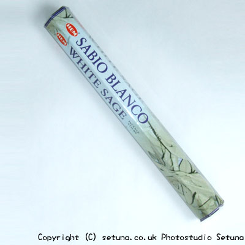

そのまま嗅ぐとカンファー（しょうのう）とミント系を足して割ったような香りでメントール系のような感じもします。
火をつけた後はふんわりと香りが広がります。
おとなしめの香りでプラーナ香に似ている気がします。
中低層はカンファーっぽいですが上昇するに従ってホワイトセージの甘い香りがしてきます。
残り香は少しさっぱりと下感じのホワイトセージの甘さが残る香りがします。
焚いた後、空気が透き通ったような印象を受けるお香ですね。
魔除けになるとか、浄化作用があると云われるホワイトセージですが、
何となくわかるような気がします。
ちなみに羽虫などの虫除けにも使えます。
